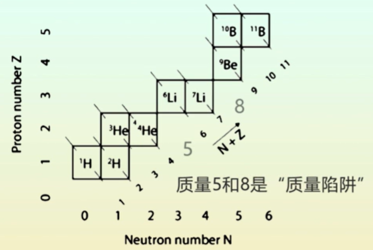

地球的故事
第一章 宇宙起源
1、宇宙大爆炸
宇宙存在一些问题：
宇宙有多大？宇宙有多老？宇宙是否有源头？
第一：Heinrich Olbers于1826年提出奥伯斯佯谬：
如果宇宙是无限的并是稳态的，那么整个天空即使是在夜晚也会像白天一样明亮。
假如是由于黑暗星体，尘埃或星体阻隔的话，它们最终会被恒星加热并发出自己的光。（无法反驳）
假如宇宙是有限的，那么宇宙会塌缩，边缘的星系会被拉向宇宙内部（无法反驳）
Georges LeMaitre提出：宇宙不是无限的，宇宙不是静止的而是正在膨胀的，（宇宙大爆炸模型），可以解释奥伯斯佯谬。
2、星系光谱红移
光具有波粒二象性，并且光的波长越短，频率越大，光子能量越大；波长越长，频率越低，光子能量越小
特征谱线：
每个元素都有特征谱线，
原子电子在不同层级之间跃迁时会吸收或释放特定波长的光。
天体会发出不同波长的连续电磁辐射，而天体外层大气温度较低，会吸收掉一些特定的波长的光子，能量与不同能级之间的跃迁相对应。因此光谱中会产生一些暗线。
这些暗线就是每个元素的特特征谱线。每个元素都会有各自不同的特征谱线，我们可以由此得知恒星中有什么元素
太阳的光谱：夫琅和费光谱。
谱线红移：与我们不同距离的恒星，探测到的暗谱线会不同程度的向红光的方向移动
类似现实中：火车鸣笛时，火车接近，声音尖锐，火车离开，声音变低沉。
由此证明了：恒星在向原理我们的方向移动，宇宙正在不停的膨胀。
3、宇宙年龄
宇宙的年龄是多少？
宇宙天体距离测量方法：
- 三角测量法
- 标准烛光法
- 大小和亮度。
根据光谱红移，离我们越远的恒星红移速度越大：恒星离我们越远，远离我们的速度越快。
哈勃定律：恒星离我们的距离和远离我们的速度线性相关
而根据时间=距离/速度，可以算出宇宙年龄大约为137亿年
所有恒星都在远离我们是否意味着我们处在宇宙中心? 不是->因为只是空间整体在膨胀，但是相对位置没有改变。
4、宇宙大爆炸的证据
星系的光谱红移、宇宙背景辐射、宇宙中的H/He比值
温度的标尺：开尔文（K）、摄氏度（°C）、华氏度（°F）
物理上面另一种表示方式：能量
黑体辐射：
- 所有物体都会产生热辐射
- 辐射的波长和强度随温度变化
- 如果温度足够高，一些辐射会进入可见光部分(焊接的电弧)
宇宙背景辐射：科学家通过理论计算发现宇宙背景辐射确实存在
1964年，发现来自各个方向强度不变的背景微波辐射，相当于~3K的黑体辐射
根据威尔森微波各向异性探测器 探测宇宙微波背景在不同方向上的涨落的测量，推断出宇宙的年龄和组成：73%暗能量，23%暗物质，4%各类元素
第二章 元素起源
1、元素和核素
地球上陆壳元素丰度：
Fe、Mg、Si、O是硅酸盐天体的主要组成元素，宜居行星还需要有C
贵金属元素，如铂，都进入了地核，稀土元素丰度也不高。
太阳上的元素丰度：
氢和氦丰度最高，Li、Be、B丰度很低，丰度总体呈锯齿状变化，总体丰度较小，Fe丰度最高
元素的基本概念：
原子大小由电子云大小决定，质量由原子核决定
原子核中带正电的质子共存：强力，需要粒子靠的很近才会产生作用（核聚变可以实现粒子靠的很近）
核素图：
横坐标：中子数，纵坐标：质子数
黑色区域：稳定带
灰色区域：原子核不稳定，会产生核反应：
- 电子捕获：由于质子太多，质子->中子，核素图中方向↘；
- β衰变：由于中子太多，中子->质子，方向↖；
- α衰变：由于质量太大，损失两个质子两个中子，方向↙↙
同一行中的原子核：相当于一个元素的所有同位素
斜对角线上的元素：质子数中子数总数一致，质量数一样，为同重核素。
黑框：稳定带，
元素返回稳定带：在稳定带上方：电子捕获，在稳定带下方：β衰变
2、元素的形成
宇宙大爆炸期间形成五个最轻元素：氢氦锂铍硼。
质量陷阱：核素图上缺少质量数为5和8的元素

原因：氦原子核和一个质子或中子相撞无法产生稳定的原子核，并且两个氦原子核相撞也无法产生稳定的原子核。
氦原子核和质子、中子同时相撞会产生锂（Li），但是三球碰撞的几率小于两球碰撞的几率，因此Li、Be、B三个元素的含量非常少。
每形成10个氢原子就伴随一个氦原子，因此宇宙中H/He质量比为2.5
宇宙大爆炸第三个证据：H和He占宇宙物质质量的99%(过程由α β γ理论解释)
剩余元素的形成：核聚变。
质能方程式$$E = mc^2$$
- 若质量亏损，则释放能量
- 若质量增加，则需要吸收能量使反应发生
恒星需要核聚变产生的热量抗衡引力塌缩，质量越大的恒星需要更强核聚变，更多热量阻止其收缩。
不同核反应可以产生不同的元素
结合能：两个或几个粒子结合在一起时放出的能量
恒星中的核聚变只能发生到Fe,之后吸热的核聚变会导致引力塌缩，产生内爆
超新星爆发：产生中子流，不停撞击已有的原子核，制造出富中子的同位素
这些富中子的同位素一直接收，直到中子太多发生β衰变，然后继续接收中子。这些元素都可以通过β衰变形成稳定元素。这个过程为快中子捕获。
快中子捕获（r-process）：大量中子被元素捕获。如果有多个稳定的同位素，这一过程只形成中子数多的同位素（核素图中靠右边的元素）
慢中子捕获（s-process）：不需要大量的中子流，在恒星内部，原子核可以通过缓慢的过程捕获中子形成稳定的原子核。在恒星内部，这个方法也可以产生一些较重的元素。
（如果形成了一个不稳定的原子核就会发生衰变，可以根据这个原理判断图中哪些是稳定的原子核，哪些是不稳定的原子核）

需要能够判别重元素的原子核是通过哪个过程形成.的
通常来说，快中子捕获过程可以发生在远离稳定带的下方形成，而慢中子捕获过程只能发生在稳定带附近
同时，快中子捕获过程中几乎全部都是不稳定原子核，而慢中子捕获过程中会发生衰变的元素才是不稳定原子核
除此之外，形成同一个元素中质量数较少的同位素可以通过p过程。这是一个原子捕获质子的过程，核素图中的方向通常是向上的。
通过超新星爆发中的快中子捕获过程和恒星晚期的慢中子捕获过程，比Fe更重的元素就会形成。
星系中元素的分布也受超新星爆发影响。
3、元素合成证据
确凿的证据：
- 恒星燃烧产生的热量是抗衡恒星重力坍缩的唯一可能能源
- 超新星爆发
- 元素相对丰度：由原本含量就多的H和He通过捕获α粒子形成的新的元素（如C、O等）含量比其他相邻元素丰度高，并且Fe相对周围元素丰度较高
- 超新星爆发遗迹中观察到锝的吸收线：Tc半衰期较短，分别只有2.6和4.2百万年，无法在地球中找到，但是可以在超新星爆发的遗迹中观测到，证明这个元素可以通过这个过程形成
- 太阳系物质中短寿命核素：Al半衰期很短，会衰变为，因此在富Al贫Mg矿物中会出现Mg26异常，使得富铝矿物里面的Mg含量很高，证明核素可以通过超新星爆发形成短寿命核素。
三、矿物和有机分子
1、构建分子
恒星和超新星：
- 高温
- 电子和原子核分离的（等离子体）
- 核反应（物理）
星云：
- 低温
- 电子和原子核组成原子
- 电子层相互作用形成分子
为了形成稳定的分子：
- 原子的电子层被电子排满（能量最低），并且达到电子平衡
- 原子间的结合必须大小适宜
IA和IIA族元素最外层只有1个或2个电子，容易发生化学反应
VIA和VIIA族元素缺少1个或2个电子，容易发生化学反应
原子得到电子形成阴离子，而失去电子形成阳离子
离子键：电子的转移（Na和Cl）
其他元素不容易得到原子和失去原子：共用电子
共价键：共用电子对
金刚石：C原子通过共价键连接，而石墨每层内部通过共价键连接，而每层之间通过范德华力连接
金属键：金属中，不能通过共价键或离子键使得电子层全满，但是电子可以自由移动，可以共用共有的电子，但是共有化程度远大于共价键
原子结合和其大小和电荷相关，
原子大小：
- 随电子层数的增加而增加
- 随着原子核中正电荷的增加而减少（同一周期）
离子大小：同一周期中，阴离子的半径远大于阳离子半径
可以这样理解原子和离子半径：首先，电子层数越多原子肯定越大；其次，由于原子大小主要看的是外层电子云的大小（里面的质子中子都只集中在最里面的核里面，基本没什么作用），而由于质子会吸引电子，会把外层的电子拉回里面去，导致原子变小，所以电子层数相同时质子数越少的原子或离子就越大。
晶体的结构很大程度上取决于阴离子的排列方式以及阳离子如何填充到阴离子之间。
从稳定分子到晶体结构：
- 对称性无限的重复
- 有序生长能量更低
不同形状必须组合在一起才能形成连续的重复结构
Fe、Mg、Si、O、Ca、Al
无机（无C-H键）分子构成了大多数行星物质
矿物：固态，天然存在的无机化合物，均一的物理性质和对称的结构，化学成分可以写成一个公式
矿物必须是固态的，并且是天然存在的
有机分子：C H O
碳氢化合物：碳原子构成骨架，氢原子附着在碳骨架上
碳水化合物：由碳、氢、氧三种元素组成，氢氧的比例为2：1的有机化合物
脂肪：氧原子数少于碳水化合物，含有更高的能量；动物脂肪和植物油
蛋白质：长链氨基酸，其中约20个是生命的组成部分
核酸：具有携带和复制信息的功能，DNA和RNA
2、硅酸盐矿物
硅酸盐：Si、O和 其他阳离子结合
地壳中含量最多的元素构成最常见的矿物（O、Si、Fe、Mg、Ca、Na）
通常阴离子大于阳离子
阴离子和阳离子的不同排列方式可以得到不同的结构
- 三角形：阳离子和阴离子半径比在0.15~0.22之间
- 四面体：0.22~0.41
- 八面体：0.41~0.73
- 正方体：>0.73
最常见元素硅和氧结合形成硅氧四面体，形成硅酸盐骨架
外面的氧可以和另外的硅氧四面体形成共享电子，形成一种链状结构
- 岛状硅酸盐：硅氧四面体和金属阳离子形成离子键（橄榄石）
- 单链硅酸盐：外面的氧和其他硅氧四面体结合（辉石族）
- 双链硅酸盐：两个氧和其他硅氧四面体结合（角闪石族）
- 层状硅酸盐：双链另外一个氧继续和硅氧四面体结合（云母族）
- 架状硅酸盐：硅氧四面体最后四个氧都和外面的硅氧四面体相连形成共价键（钾长石）
3、矿物性质
矿物鉴定主要基于其物理性质（硬度、颜色、晶型）
形成：密度、挥发性
密度和挥发性决定了行星的组成和结构
密度取决于：原子核中粒子的平均数、原子排列的紧密程度
中间平均粒子数：分子中间粒子数/原子个数
从密度/平均粒子数的比值可以看出，密度基本上随着平均粒子数的增加而增加。
作用：我们无法获取遥远行星上的样品，但是可以根据这个图，由行星的密度推测行星的化学组成
密度是物质自我排列的主要原因。轻物体浮在重物体之上。
由此：硅酸盐行星的重要性质：外核受冷之后形成结晶，由于密度大会沉降到内核外面，形成双层结晶或单层结晶。
月球：斜长石岩屑，密度比较小，上浮，形成原始月壳，是月球存在岩浆洋的重要证据。
物质的状态：固态、液态、气态、等离子态
不同分子的熔点和沸点差别很大
低温下变成液态或气态元素：“挥发性元素”
高温下形成固体的元素：“难溶元素”
生命是由挥发性元素组成的，这些元素主要集中在地表。
星云中冷却下来首先形成哪些物质？最先难溶物质、然后低温的一些矿物
太阳系冷凝最先形成一些球粒和包体
挥发性影响物质之间的组合
不同挥发性物质可以组成不同物质组合
硅酸盐行星（地球）：球粒陨石
天王星等：挥发性物质（冰等）
天涯海角彗星：水冰低熔点有机物（处于太阳系远端，低温保存）
第四章 太阳系起源
1、太阳系规律
行星大多是共平面的：大部分行星的公转轨道接近黄道面
（冥王星的公转轨道面具有夹角）
行星的运行轨道是近圆的轨道：偏心率小
公转方向一致：公转周期都为正，（金星和海王星的自转方向与我们相反）
波得定理：行星离太阳的距离大约是前一行星的1.7倍（预言了天王星和谷神星的轨道位置）：行星之间的距离有规律
内太阳系行星比较小，外太阳系行星比较大
计算行星的质量：
1、开普勒定律、万有引力定律
万有引力定律：$$M_p = \frac{RV^2}{G}$$
其中Mp = 行星的质量，R = 卫星绕其主行星公转的轨道半径，V = 卫星公转的速度，G = 万有引力常数
2、仔细观察由已知质量的邻近行星引起的扰动来计算质量（地球对金星的扰动）
密度：外太阳系行星由密度比较小的物质组成
不同物质密度不同，可以推测：
- 内太阳系：硅酸盐和金属
- 外太阳系：包含冰
行星的具体组成：来自陨石中携带的物质
通过分析太阳光谱：太阳中低挥发性元素和球粒陨石含量非常接近，球粒陨石表征了太阳系成分
对陨石进行等时线定年：地球年龄大约在45.6亿年
2、太阳系形成
行星的分子主要是丰度比较大的元素（核聚变α粒子核素）
中低挥发性元素在太阳大气和碳质球粒陨石中含量接近
球粒陨石有球粒、难溶包体，是太阳星云中未经厉蚀变的碎片
无球粒陨石不含球粒，是极小的行星（星子）的碎片（石陨石、铁陨石）
通过无球粒陨石了解行星的密度
内太阳系主要是岩石和金属，外太阳系主要是冰和气体
截然不同的物质组成原因：
- 挥发性差异
- 具体太阳越远，温度越低
推演过程：
- 超新星爆发，造成超密度区域的塌陷，触发太阳形成。
- 角动量守恒，转动加快，收缩的星云开始扁平化，形成原行星盘，太阳在星盘中心形成
- 靠近太阳，冷凝形成岩石金属为主的物质，远离太阳：岩石金属冰，氢氦和其他气态仍旧是气体形式
- 坍塌旋转的星云内部引力不稳定，局部引力收缩形成尘埃颗粒，撞击吸积形成星子，星子近一步长大形成行星
- 太阳风吹进气体尘埃到星际空间，阻止行星进一步生长
- 外太阳系行星质量大，可以聚集保留大量气体
- 内太阳系行星成分接近普通球粒陨石（相比于碳质球粒陨石亏损挥发性元素）
- 氢氦挥发性大，在球粒陨石中含量低
K/U比：挥发性元素指标（K相对U挥发性较大）
比值随着远离太阳越来越大（挥发性元素含量升高）
月球K/U比较小： 月球形成时通过撞击，损失大量挥发性元素
星云：短寿命超新星生成并分散各种元素，形成无机有机分子，太阳系在这些“恒星出生地”形成
第五章、地质计时
1、相对年龄
史坦诺定律：基于地层重叠法则和原始水平法则，判定不同地层之间相对年龄，在沉积岩和火山岩中均适用
地层重叠法则：上面的地层更年轻；原始水平法则：形成的地层都是水平的地层
地层不整合：地层是不连续的：角度不整合；
不连续地层的相对年龄比较：使用化石
2、放射性年龄
没有化石，确定各个地层的绝对年龄？
19世纪晚期，物理学家：地球年龄20-100个百万年（热传导）；地质学家：太短了
如果地球科学家是对的：地球上必然存在额外热源
放射性衰变的发现：
- 提供了地球历史中存在的热源
- 可以用来记录地质事件的绝对时间
放射性衰变基本定律：
- 每个原子核在单位时间内都有固定的衰变概率，这个概率不受任何影响；
- 在足够多的原子中，单位时间内衰变的原子数与总原子数成正比
因此，在一个封闭系统中
- N：在t时的母体数
- λ：衰变常数，单位时间衰变概率（单位：s ）,每个元素（包括其不同的同位素）都有各自不同的值
该公式表示母体衰变的速率是和当前母体本身的数量成正比的
对上述公式积分：
N0为在t=0时的母体数量（初始母体数量）
原子核的半衰期：t 是母体的一半发生衰变所需的时间
将t 代入公式可得：
t
通常认为：10个半衰期之后，没有母体留下（只剩下0.1%）
使用对数坐标：母体的变化值可以使用线性关系来描述
同位素定年：放射性同位素（母体）衰变成稳定的非放射性同位素（子体）
- 衰变速率恒定，可以测量
- 知道衰变的速率和母体、子体的数量，可以计算出衰变时间。
地质学中常用的衰变体系：
半衰期决定每个石头究竟要用哪个体系来测量
同位素定年的必要条件：
- 封闭体系
- 衰变速率恒定
- 子体的初始含量已知（0为最佳）
- 或者母体的初始含量已知（一切都是为了求出）
对于 C，宇宙射线会源源不断的产生，如果产生速率不变，并且 CO 的含量不变，那么14C和12C的比值恒定
所有与二氧化碳反应的体系都会有一个最初的14C/12C比值，这个值由大气决定
如果物质不再与大气交换（达成封闭体系），那么会发生衰变，时间越长，14C/12C的比值逐渐降低，由此通过公式得出
如果当今体系和原来体系不一样怎么办？
3、等时线定年
可以利用公式来计算，但是很多情况下初始母体值没有办法测量，必须使用新的方法
子体同位素的演化
母体同位素N会衰变成子体同位素，但是初始的系统中可能已经存在了一些，因此需要区分初始的D和放射后衰变形成的D。
- :初始的D的含量
- :母体衰变形成的D的含量
可以得到公式：$$D(t) = D_0+D^*(t)$$
其中代表t时刻的D，代表从刚开始到t时刻一共衰变形成的D，它等于的是原来的母体含量减去现在的母体含量，即：，因此可以代入得到：
在一个封闭系统中：，然后我们再公式转换一下，得到，就可以得到：
这个方程中仍然含有两个未知量。解决办法就是：利用一下第三个元素。这个元素的特性必须是：稳定的，非放射成因的。这意味着这个元素自始至终含量都未发生变化，因此可以将其看成一个常数。
假设这个元素的含量是S(t)，那么我们就可以将刚刚的式子整体除以一个S(t)，就可以得到如下式子：
即：$$(\frac{D}{S})_t=(\frac{D}{S})_0+(\frac{N}{S})_t(e^{\lambda t}-1)$$
这个就是等时线方程
这个方程仍然有两个未知量，但是已经化成了一个线性的形式，可以看成Y=截距+X*斜率，其中Y是，而X是。而Y和X都是现在的两个物质浓度的比值，都是可以测量的，因此是已知的。所以我们就可以通过多取几个点，然后进行直线拟合，就可以得到这个直线的斜率和截距。而其中斜率就包含了我们所需要知道的年龄。
在衰变为的体系中，是一个稳定的同位素，通常可以用来作为稳定元素来代入等时线方程。
等时线方程的前提：必须是一个封闭的，充分混合的系统
通过计算球粒陨石的等时线方程，我们可以得到球粒陨石的形成时间大约在45.6亿年
月球和球粒陨石形成的年龄非常接近：
但是地球的年龄是多少？我们可以知道：地球整体是一个封闭体系。使用的是235U衰变为207Pb，稳定元素204Pb的体系，以及238U衰变成206U，稳定元素204Pb的体系。然后我们可以将两个等时线方程的式子的初始项移到左边，然后将两个等式相除，就可以得到：

这里面只有t未知，并且左边的可以通过测量不同的样本来得到。
第六章 地球的内部结构
1、内部结构的重要性
行星的形成：气体星云冷凝形成尘埃，通过布朗运动和范德华力形成聚合体，聚合体吸积碰撞形成星子、星胚，继续碰撞吸积形成原始行星。
吸积过程、放热元素衰变，可以产生能量，使原始行星发生部分或全部熔融，使得原始行星内部能够产生圈层结构。
地球的圈层结构：（从内到外）
- 内核：金属内核
- 外核：液态金属外核
- 地幔：分为上下地幔
- 地壳：大陆地壳和大洋地壳
- 大气圈
地球圈层结构与宜居性有什么关系？
1、地核产生磁场：液态的外核和固态的内核形成自激发电机，产生磁场：使得大气圈免受高能太阳风粒子的电离作用（带电粒子与中性的大气粒子发生电离作用，使得大气粒子逃逸），维持了稳定的大气圈
火星：失去了内稟磁场，太阳风粒子直接和火星大气圈发生作用，表面干旱寒冷。
2、海洋和大陆：天气变化主要通过海洋和我们大气的相互作用。地球很早就出现液态水使得地球早期就可以进行生命出现之前的一个化学状态，逐步出现一些过程，慢慢组成我们的生命物质。为生命的起源和演化提供环境。
3、地表挥发分对气候的反馈机制：二氧化碳随火山喷发大量释放，地球表面温度升高，同时加剧了风化作用（消耗二氧化碳，形成碳酸盐沉积物，给大气降温）。碳酸盐沉积物也会随着大洋地壳的俯冲重新回到地幔，被熔融随着火山喷发释放。维持适宜的气候条件。
正是不同圈层直接的物质的循环活动，维持了地球长期稳定的气候条件。
问题：
1、如何知道地球内部存在圈层结构
2、为什么地球内部会形成圈层结构
3、什么时候地球形成这些圈层结构
2、怎么知道内部结构
获取样品（大洋深钻）：非常表层，需要寻找其他方法
1798年卡文迪许：地球密度为5450 ；现代方法：5250
地表：水：；硅酸盐矿物：
地表的物质密度远小于地球的平均密度：说明地球内部必须存在密度更大的物质
转动惯量：物体的质量与物体离自转轴距离的平方的积分
- 由地球赤道“膨胀”的部分决定
- 如果质量在核部集中，膨胀部分对转动惯量的贡献就会变小
- 地球的转动惯量比密度均匀的球体少大约20%
经过计算：地核密度约为11000 ，半径为地球的一半
- 一个大气压下只有金属可以达到
- 铁相对金银更为常见
由此可知：地球内部有个铁核
观测地球结构：地震波
- 纵波（P波），也叫初至波，第一个到达，速度和体积模量、剪切模量有关
- 横波（S波），剪切波，粒子振动方向和波的传入方向垂直，无体积变化
P波在地核的传播速度最快（地壳、地幔、地核分别为6，8，11 ）
S波波速(地壳、地幔、外核、内核分别为4，4.5，0，3.5 )(外核波速是0因为剪切波无法在液相和气象中传播)
波经过一个界面时会产生反射或折射，会导致不同台站观测到的地震波会有差异（不连续面）
- 莫霍不连续面（地幔和地壳的界面）
- 古登堡不连续面（地幔和地核的界面）
- 莱曼界面：内核和外核之间的界面。
如何知道外核是液态？

S波不能在液体里传播，产生了一大段无法观测到S波的地区，即S波极大阴影区。而P波由于界面的折射反射现象也会产生两个阴影区。
如何知道内核是固态？PKJKP震相（P波穿过外核，在内核转换为了S波）
P波传播到内外核交界处会产生S波，从而被监测到
地球密度剖面：

通过密度剖面，就可以推算出地球内部是哪种物质
3、内部元素分布
在地核中铁的密度过大了：还含有20%的轻元素，需要推测（如S，O，Si，C，H）
球粒陨石熔融，可以形成三种互不相容的熔体
- 气相
- 硅酸盐熔体
- 硫化物熔体
- 金属液体
不同元素会发生分配关系
- 气象中：H，He，N惰性气体（亲气元素）
- 硅酸盐熔体：碱金属、碱土金属、卤族元素、B、O、Al、Si等等（亲石元素）
- 硫化物熔体：Cn、Zn、Ga、Ag等（亲铜元素）
- 金属液体：Fe、Co、Ni、Ru等（亲铁元素）

元素周期表中分组：

- 亲气元素：稀有气体、氢、氮
- 亲石元素：VIIA族、IA族、IIA族
- 亲铁元素：VIIIB族元素
- 亲铜元素：硫化物中
亲岩浆元素：喜欢硅酸盐熔体的元素在地壳中聚集
亲铁和亲铜元素主要集中在地核中；
亲石元素主要集中在地幔和地壳中；
亲岩浆元素主要集中在大陆和地壳中
地球中丰度最高的四个元素：铁、氧、硅、镁
4 地球怎么形成圈层？
地核是怎么形成的？
1、在太阳星云冷凝的过程中？
2、不混溶过程和密度分离？
行星的形成中的两种吸积过程：
- 非均匀吸积：金属最早冷凝形成核
- 均匀吸积：核在吸积之后形成
元素的冷凝序列：

不能看出金属是首先冷凝形成的
球粒陨石的证据：均匀吸积（内部没有单独形成一些金属大块的物质）
因此，地球的形成是金属/硅酸盐分离（不混容过程），这导致了亲石元素和亲铁元素之间的分离。
- 铁陨石：表征了核的成分。
地核何时形成？
地球：核幔分异的时候形成的
因此，用短寿命同位素来限定时间（Hf-W体系）
- W是亲铁元素，而Hf是亲石元素
- 是放射性同位素，会衰变成，但半衰期仅有9百万年。
假如核幔分异发生在衰变之前，那么会导致地幔中存在大量，就导致了衰变后地壳的。（硅酸盐地球比球粒陨石富）
假如核幔分异发生在衰变之后，那么所有的W都会在地核中，就不会发送地壳中的异常。
事实上：
- 都是微量元素，测量困难
- 直到2002年，几个不同的实验室才获得准确可靠的数据
测量结果：硅酸盐地球中的比球粒陨石更富集
异常表面地核形成于地球形成之后约30Ma内
地球温度随深度变化图

在不同的深度，刚开始温度使得铁成为液态，当深入时铁变成固态
地壳的形成
原始地幔产生部分熔融，形成了一些硅酸盐物质（地壳）
定义和证据：
不同物质混合溶液的熔点不是固定的，而是一个温度范围
- 可以发生部分熔融
- 液相的成分随温度变化
固相线：随着温度的升高，固相与首次出现的液相的分割线（固相线温度以下全是固体）
液相线：随着温度的升高，固相与首次出现的液相的分割线（液相线温度以上全是液体）
固相线和液相线之间的是固液混合物
物质减压之后到达液相线形成固体，然后上升形成地壳。
该现象出现的位置：洋中脊（夏威夷、冰岛、日本）。在洋中脊形成新的洋壳，老的洋壳会俯冲到地幔里去（大洋地壳）
大陆地壳形成过程：早期多阶段的熔融作用。
早期形成大陆地壳，受热后融出一部分物质，低温矿物密度小会上浮，高温矿物密度大会下沉（拆沉作用），前往地幔
洋壳由含50%SiO2的玄武岩岩浆形成，岩浆可由地幔减压熔融产生，洋壳都很年轻（<150Ma）
陆壳由花岗质岩浆及其演化的沉积物形成（60%到70%SiO2）
大气圈的形成
猜测？晚期富挥发分彗星加入？地球内部的去气作用？
研究：短寿命同位素，会衰变为，是惰性气体同位素，回到大气圈里面去。如果是去气作用的话会让Xe到大气中去
1983年：上地幔异常：早期一部分留在了地幔里，继续衰变形成，但是晚期没有去气作用，留在了地幔里。
由此可知：地幔和大气分离发生于地球形成之后约30个百万年。
原始大气圈和现在的大气圈差别很大（生命的改造）
第七章 地球的邻居
1、撞击的普遍性
巴林杰陨石坑：国际最著名陨石坑（5万年前形成），陨石大小和撞击坑直径相差很大
太阳系天体表面到处都保留着撞击坑。
- 行星是通过撞击形成的
- 行星表面有大量撞击坑。
太阳系有1颗恒星，8颗行星，>159颗卫星，~1000亿小行星，超过10000亿颗彗星（海王星之外）
小行星带：火星和木星之间，撞击的主要来源。
形成原因：木星很早形成，质量很大，导致星子并没有吸积形成行星。
彗星撞击体：来自柯伊伯带，数量众多的彗星和冰天体（冥王星位于此）、来自奥尔特云（太阳系外的一圈巨大冰天体形成的球形云）
因此：撞击三个可能来源：小行星带、柯伊伯带、奥尔特云
撞击坑大小取决于撞击坑的动能，撞击体远小于其形成的撞击坑
通常撞击坑直径是撞击体的20倍，经常会熔融部分物质，形成岩浆，冷却后可以形成熔融玻璃、玻陨石。
玻陨石可以重置同位素定年时钟，所以可以确定撞击坑年龄
撞击坑定年：根据撞击坑的密度进行定年，密度越多意味着地表年龄越大
后期的地质活动可以改造（消除）陨石坑的撞击记录（IO上没有撞击坑因为IO上一直持续着岩浆活动）
2、月球的成因
月球是除地球外研究的最多的一个天体
相对于主行星质量非常大（地球的1%），贫铁贫挥发分，平均密度3.3
通过月岩62255的分析：比太阳系的年龄小60到125百万年（月壳很老）
地球自转比月球公转快很多，潮汐作用产生的海水对于地球自转有一个刹车作用，而由于地月系统角动量守恒，所以会使得月球的轨道变大（弥补地球自转减慢而损失的角动量）。通过测量可以发现月球每年以3.8cm的速度远离地球
早期地球的一天的时间比现在短。现在地月距离：60个地球半径。10亿年前：54分地球半径。40亿年前：21个地球半径。月球刚形成：3.8个地球半径
月球硅同位素和地幔硅同位素比值非常接近。
对于氧同位素，地幔和地球非常相似，但和其他星球有差异
这两者说明：月球和地球能源物质是一致的
月球形成模型：
- 捕获说
- 共生说
- 大撞击理论
- 裂解说
1、捕获说
地球通过引力抓获了一个天体
1、完整抓获（没有破坏天体）
2、解体捕获产生的堆积层增生
无法解释地月成分的相似性和月球近圆的公转轨道
2、共生说
地球和月球同时形成（不能解释月球贫铁，密度差异）
3、裂解说
地球熔融状态时转速太快导致一部分物质从地球裂解形成了月球（不能解释地月系统的角动量）
4、大撞击理论
另一个天体撞向地球，溅射出的物质在原始月球轨道上吸积形成月球
月球大撞击成因很好解释了角动量，月球轨道、月球大小、物质组成等，成为月球形成最普遍的观点
THEIA，火星大小的天体撞向了地球，溅射出的物质在月球原始轨道上吸积形成原始月球（解释地球较快自转速度和相对于黄道面的倾斜）
没有月球：地球倾角发生混乱变化，失去气候调节器，影响地球宜居性
大撞击在太阳系中的其他效应：金星的反向自转、自转减慢、天王星自转倾斜、水星巨大的核
3、月球演化
月球的样品主要是月壳。
月球的两分性：高地和月海
- 高地月壳：斜长岩，2.7g.cm^3，
- 月海：大量的玄武质熔岩流(黑色部分)
15415样品：起源石，代表了月壳高地的起源
斜长岩：
- 一种主要由钙长石矿物组成的岩石
- 钙长石是一种斜长石，分子式CaAl2Si2O8
- 单矿物火成岩非常罕见，表面了矿物分离和堆积的过程
高地斜长质月壳是古老的（斜长岩等时线44.56亿年，玄武岩等时线31.4亿年）玄武岩比斜长岩更年轻

高地斜长岩相对低地玄武岩更富集Eu

这表征了月幔亏损Eu的特征，原因如下：
- Eu是稀土元素，大多数情况下有+3价态
- 月球有还原条件，Eu会变成+2价
- Eu 与Ca 相似，容易取代钙长石中的Ca，所以斜长石/钙长石中会富集Eu
阿波罗11号返回土壤样品中的岩石碎屑，发现白色碎屑是斜长岩质的，提出了月球最重要模型：岩浆洋模型

- 初始处于熔融状态，随温度冷却地表岩浆洋结晶下沉，形成原始月幔
- 结晶到75%时形成钙长石，相对残余岩浆密度较小，上浮形成原始长石质月壳
- 结晶到90%形成钛铁矿，密度大
- 冷却到2%，剩余岩浆富集不相容元素，原始KREEP
原始月幔发生部分熔融形成月海玄武岩：岩浆洋结晶形成钛铁矿，在上层，导致上层密度大，下层密度小，重力不稳定，原始月幔发生翻转，势能减小使得月幔发生部分熔融，熔体上升到月球表面形成月海玄武岩。
地球也会熔融吗？
热源：大撞击、Al、K-U-Th放射性元素，地核形成势能减小；热损失更小（表面积/体积比更小），因此地球也可能发生熔融，形成岩浆洋
地球压力远大于月球，斜长石最高稳定压力12Kb，相当于地球深度的36Km，无法形成较厚的地壳
总结：
- 月球和地球都有早期的熔融事件，产生岩浆洋，
- 月球几乎全部熔融，形成富斜长石的月壳
- 地球也熔融了，但可能未在整个地幔范围中发生，
- 现在地壳地幔可能不保留早期分异事件的证据
第八章 地球的宜居性
1、液态水
地球与其他行星重大区别：地球有海洋（表面大量液态水存在）
问题：液态水什么时候出现？为什么地球能保留液态水？
38亿年前存在液态水的证据：
1、最古老的岩石
-
格陵兰岛伊苏阿组：38亿年前变质岩中：含有海洋沉积物（燧石、碳酸盐岩、条带状铁建造）（表明地球表面已经有液态水）
-
最古老岩石中有变质的枕状玄武岩（形成于洋中脊）（表明地表很早就有海洋）
2、地球上生命存在了35亿年
3、地壳岩石中的氧同位素比值：
锆石：年龄可达44亿年，U母体含量高，但又不含有铅的子体同位素；可以测量氧同位素组成。
-
1、使用U-Pb协和图进行定年。每颗锆石可以得到：结晶年龄和变质年龄；
-
2、氧同位素分馏
氧同位素：三种，丰度最高，质量差异导致反应物和产物的微小差异
氧18和氧16的差异，表示当前差异与标准差异的差距，数值越小，意味着越少

稳定同位素分馏在高温下（>1000°C）可以忽略不计；要达到几个千分之一的分馏，需要<100°C。因此，水循环过程中氧同位素发生分馏，岩浆中没有。

海水中的差异作为标准差异，差距为0；海水蒸发变水蒸气，更轻，更容易进入蒸汽，因此蒸汽中差距为(表示 更少)，在25°C的时候差距为-9‰。
因此，古老沉积物存在氧同位素变化：存在水循环

右下角为jackhills锆石，氧同位素锆石有很大变化，而钛含量表明在750°C左右形成
总结地球大部分时间内存在液态水的三点证据：
- 1、最古老的岩石包含深水沉积物和枕状玄武岩；
- 2、地球上的生命存在了35亿年
- 3、地壳岩石中氧同位素比值已变化了40多亿年（而且在水循环过程中只有低温分馏）
为什么地球有富水表面
- 形成丰富地表水的两大关键
1、在核幔和壳幔分宜过程中，挥发分集中在表面
2、水没有流失到外太空（火星没有液态水的原因）
挥发分不流失外太空的两个条件：
- 逃逸速度（木星60km/s，地球11.2km/s，月球2.4km/s，越大则越不容易逃逸）
- 分子质量（质量越大越不易逃逸）
地球参考物：氦。（地球的氦是动态平衡的，而一年中通过物质衰变去气增加到大气中的氦原子数是当前大气氦原子数的百万分之一，因此He在大气中的停留时间是一百万年）
如氦这种小质量原子，停留时间也达到了100万年，而对于更大质量的分子，逃逸几乎可以忽略不计，维持了大气层
水分子可以紫外线下分解成氢气，质量很轻容易逃逸，但水不逃逸：臭氧层阻挡紫外线，水在平流层之下就不会分解。而水能够维持在平流层之下：因为水陷阱（对流层上部温度低，水变成冰降落）
而水陷阱和臭氧层都建立在稳定大气层之上：维持稳定大气层的机制：地磁场，阻止太阳风
2、地表温度
早期太阳热量输出比现在低30％，因此地表温度比现在低20多度。但是38亿年前就有液态水，甚至44亿年前（jackhills锆石），说明地球气候一直非常稳定。为什么？
气候并不固有地处于能保持液态水的理想温度。
什么机制控制着行星表面的温度？
地球反射率为0.3，如果不吸收热量，那么地表温度会只有-20°C，因此不是完全黑体。
行星的表面温度的受控因素：
- 恒星的光度
- 行星与恒星的距离
- 行星表面的反射率
- 行星大气的温室效应
温室效应：使得行星表面温度增加的效应，温室气体吸收反射光里面的一些特定的光，有CO2、CH4、N2O2等气体

地球二氧化碳温室效应高于甲烷

吸收峰即为被吸收掉的反射光，证明CO2的效应。（地球早期是CH4主导）
- 因此，温室气体是地球历史上保持温和气候的方式。
什么反馈机制使地球气候稳定？（对比金星的温度越来越高）
火山是CO2的主要来源，会导致温室效应增强，地表温度升高
去除大气中的CO2可以降低温室效应，地表降温。
去除大气中的CO2：
- 岩石的化学分化降低了大气中CO2的含量（形成CaCO3）
雪球事件： 地球580到750百万年之间，地球表面温度非常低。下层出现冰川沉积物表明地表温度降低，而上层的碳酸盐沉积物表明温度升高（CO2升高）
什么机制发生了地球从冰冷的环境进入温暖环境？

大气CO2含量增加时，地表变暖，酸雨使得大陆分化，携带钙离子进入海洋与大气中的CO2发生反应，降低CO2浓度。反之亦然。
第九章 板块构造
1、大陆漂移
一些现象：
- 许多山脉出现在大陆边缘，一些山脉出现在大陆内部，为什么
- 大陆海洋二分性：海洋中间出现了隆起的地方；为什么
- 地表高度分布图：呈现双峰式分布（在地上和地下各有一个比例高的峰）
- 非洲和南美洲几乎可以完美拼和到一块，为什么
- 中龙不可能穿越大西洋，但是在非洲和南美洲都看到了这种化石，为什么
德国气象学家魏格纳：大陆漂移说：大陆地壳是可以移动的
证明的证据：
- 克拉通和造山带可以完美拼合到一块去；
- 不同大陆之间也可以拼合，形成盘古大陆
- 不同的动植物化石在各个大陆都有分布
- 赤道附近看到冰川运动，证明这个区域早先不在赤道
问题：
- 大陆地壳怎么在大洋地壳和地幔中移动？动力在哪来？
2、海底扩张
一些历程：
- 挑战者号科学考察：汤姆森在船上探测海洋深度；
- 二次世界大战结束后：维马号科学考察：钻取洋壳，利用声纳探测洋底深度：发现大西洋中间出现隆起区域：洋中脊
- 二战之后发现靠近海底的磁场出现显著变化：洋中脊两侧出现磁异常条带
单火山岩浆记录的磁场反转：岩浆中的磁性物质在冷却的时候会记录当时磁场的方向与强度。不同的岩浆可以记录不同的磁场方向。
因此：岩石记录的磁场的变化反映了地球磁场随时间的变化。
大洋洋中脊岩浆可以记录磁场反转，并且可以呈对称分布

磁异常的变也可以反算大洋中脊的扩张速率
洋盆是如何形成的？
- 陆壳因拉张开裂形成大裂谷，但尚未形成海洋环境（东非大裂谷）
- 陆壳继续开裂，出现狭窄的海湾，出现洋壳（红海）；继续扩张（大西洋）
重要特征：离洋中脊越远，洋壳越老，沉积物越厚；并且离洋中脊越远，底部成绩物越老。
但是大洋地壳年龄最老的只有两百个百万年，为什么？
3、板块构造
洋壳形成于洋中脊，消失在俯冲带。洋中脊和俯冲带都会产生地震。洋中脊同时会产生火山（冰岛）
转换断层：洋中脊和洋中脊相接的地方，连接不同洋中脊部分的一个断层

转换断层和走滑断层直接的区别：

上图中转换断层只影响了B区域，而A和C区域没有受到影响
全球地震分布图：

靠海洋区域：浅源地址；靠大陆区域：深源地址
贝尼奥夫带：俯冲板片内部存在地震带

板块构造理论：
- 地球表层由一系列的板块组成
- 洋壳形成在大洋中脊，岩浆作用形成了洋壳
- 洋壳消失在汇聚板块边缘，板块通过俯冲回到地幔
- 大陆不发生俯冲
板块构造理论中的一些注意点：
- 岩石圈：地球表层的坚硬外壳（约100km）。板块由这种物质构成。包含了地壳的全部和上地幔的顶部
- 软流圈：岩石圈之下的一部分地幔
- 岩石圈位于软流圈顶部，可以在软流圈之上运动
板块构造学说中，地壳不是板块，板块是指岩石圈，这是与大陆漂移学说的一个根本性区别，也解决了动力学问题
转换断层、洋中脊和俯冲带对应三种不同的板块边界：转换边界、离散边界、汇聚边界
- 转换

包含转换断层
- 离散

包含洋中脊、洋盆
- 汇聚

分为三类：
1、大洋-大洋型（日本，形成岛弧）
- 高滴着活动构造带
- 活火山、高热流弧
- 以海沟为界
2、大洋-大陆型（安第斯山脉，形成大陆弧）
- 活跃的火山活动
- 伴随着地震活动
3、大陆-大陆型（喜马拉雅山脉）
- 汇聚由地壳的变形而非俯冲
板块的划分：亚欧板块、非洲板块、太平洋板块、印度洋板块、美洲板块、南极洲板块
测量的板块速度与磁异常条带推断出的板块速度一致
十 地球内部循环
1、地幔流动
地球中不管是纵波还是横波都可以传播：地幔是固体
固体是否能流动？
冰川的流动：
- 塑性流动：厚度>50米的冰
- 底部滑动：液态水
岩石的流动：
不同的变质岩露头说明：说明可以流动
固体的三种变形：
- 弹性形变：可逆
- 断裂：不可逆
- 塑性变形：不可逆
岩石在低压、低温和快速应力下是脆性的（会发生断裂）；而在高压高温下，以及缓慢施加应力时可以流动
地幔流动的证据
回顾：阿基米德定律：漂浮的物体排开液体的质量与物体的质量相等。
不同地表承载不同重物的方式：不同均衡方式：
- 脆性地表：

地表不发生形变，因此没有均衡，地表受力不一样
- 塑性地表(重物相同密度不同体积)

地表会发生形变，承载的重物可以排开地表以下的物质，发生均衡。（均衡深度：重物最深的位置）越大的体积进入的深度越深。
- 塑性地表（重物相同体积不同密度）

密度最大的物体排开的体积最大
实际上：如果是塑性形变，那么不同的山密度相似。因此山越后，根越深。
如何知道大陆存在根部？
- 如果存在根部：相同深度下压力是相同的；地表的引力是相同的
- 如果不存在根部：相同深度下压力不相同；地表引力不相同（重物上方的引力比没有重物上方的引力更大）
洋壳和陆壳：
- 陆壳：以大陆为主的地壳，硅铝质
- 洋壳：构成洋底的地壳，硅镁层；
因此，大洋地壳比大陆地壳密度大
大洋地壳和大陆地壳的均衡模型：

- partt模型：解释洋盆和大陆之间的高度差异（洋壳致密辉长岩，陆壳低密度安山岩）
- Airy模型：解释大型山脉存在的原因，越大的的山脉有越深的根
地幔的流动：
冰川覆盖在地表，地表承载压力变大，地壳下沉，排开地幔的物质（地幔向外流动）；温度升高，冰川溶解，地表承载压力变小，地幔向回流动（非常困难）
地幔的粘度是水的倍，因此是非常缓慢的过程。通过高程变化可以计算地幔的粘度
地幔流动的证据：
- 陆壳和洋壳均衡补偿
- 冰川溶解后地壳均衡回弹
2、地幔对流和板块边界
固体地幔能不能发生对流？
对流的驱动力：流体内部的密度差异。
瑞利数：可以指示对流是否会发生
其中：α：热膨胀系数；g：引力常数；ΔT：顶部和底部的温度差；h：流体的厚度；η：流体的粘度；k：热传导系数
Ra>2000时，可以发生对流

瑞利数达到会发生规则对流单元；继续增加时对流单元更加复杂。
板块边界是否与地幔对流单元对应？
地幔的下沉流：
- 地震波层析成像：俯冲板片下沉进入地幔：俯冲板片对应下沉流
- 热力学：俯冲板片温度相对旁边的地幔楔温度低
- 岩石学证据：俯冲板片密度逐渐增大，形成下沉流。
地幔的上升流：
洋脊浅部上升流：由扩张产生的减压驱动，上地幔表层的岩浆活动，与地幔对流无关
那么地幔柱发生在哪里？
- 板内（热点/地幔柱 ）火山作用：一些地幔柱延伸到核幔边界，这些地幔柱对应了上升流。
由于存在对流，上地幔应该存在温差。
- 洋中脊扩张引起的减压部分熔融形成洋壳，地幔温度不一样会导致部分熔融程度不一样，形成的洋壳厚度也不一样。

- 上地幔温度高：部分熔融程度大，形成的熔体体积多，洋壳越厚，洋中脊越浅，不相容元素浓度越低。
- 上地幔温度低：部分熔融程度低，形成的熔体体积少，洋壳越薄，洋中脊越深，不相容元素浓度越大。
因此：
- 浅的洋中脊是由地幔形成的，与“热点”有关（冰岛）
- 深的洋中脊远离热点，显示出较冷的地幔区域

第十一章 地球化学循环
1、洋中脊
洋中脊的火山作用驱动形成一个关联固体地球、海洋和大气的全球循环系统。
地表的火山活动：
- 洋中脊的岩浆活动
- 汇聚板块边缘火山
- 板内火山活动
洋中脊的岩浆活动：每年产生；汇聚板块边缘：每年喷发。洋中脊火山岩浆占全球的80%
洋脊由错段的不同部分组成，大洋板块张开形成的线性结构，岩浆充填，以转换断层为边界。
洋脊按速率分为：
- 快速扩张洋中脊（东太平洋海隆火山）>10cm/year
- 慢速扩张洋中脊,<4cm/year，会形成裂谷带
洋中脊岩浆温度达~1200°C，海水和岩浆形成作用发生黑烟囱，其中的流体温度高达400°C（水压原因提高了水的沸点）。同时形成了富水和富CO2的矿物，使得大洋地壳从无水到2%的水
洋中脊中喷出的岩浆和海水作用形成枕状玄武岩。
黑烟囱成因： 高温的水可以溶解金属，并将硫酸盐还原成硫化物；流体上升后，降温，硫化物晶体析出，形成了黑烟囱
黑烟囱导致海水散射度发生变化，也会导致洋壳和海水之间的化学交换（补充），也对维持海水化学组成至关重要（Fe，Mn，Li）
对比大洋地壳矿物（绿泥石、角闪石、蛇纹石）和地幔部分熔融形成的岩浆冷却下来的矿物（橄榄石、辉石、钙长石）：大洋地壳矿物都含有羟基（富水矿物）以及碳酸盐岩脉；玄武岩：无水矿物；
洋中脊对周围生物提供热量（管虫），海底存在一个由嗜热生物构成的生物圈，主要依靠火山挥发分
猜想：在火山作用活跃的天体中，水饱和的外部圈层能够庇护（或孕育）不同的微生物生物圈
洋中脊与宜居性
- 洋中脊的地球化学过程保持了海洋化学组成
- 洋中脊将水和其他成分输送到俯冲带，使得火山活动和大陆生长能够进行
- 洋中脊在水循环和碳循环中起着重要作用，水/碳循环保证了地球气候的长期稳定性。
- 洋中脊可能在地球生命起源中起到了重要作用，为宇宙其他天体生命存在的可能性提供了启示。
2、俯冲带
水是否进入了俯冲带？
水可以降低熔融温度，
环太平洋火山带都是俯冲带，俯冲带和火山有直接的地理相关性。
胡安-德富卡板块向北美洲板块俯冲，火山带与俯冲板片形成平行关系。（证明了这种关系），而火山会发生爆发性喷发。
如何证明汇聚性板块边缘形成的是富水岩浆？（岩浆初始的水含量较高）
- 矿物晶体的熔融包裹体，保留初始挥发分组成，水含量可达>=5%以及高CO2
- 火山作用通常是爆发式的，而减压产生气体是这种爆发式喷发的主要原因
- 含水条件下的岩浆分异导致了富硅岩浆的形成（安山岩、英安岩、流纹岩）
另一个证据：许多汇聚板块边缘喷发的岩浆含有
- 宇宙射线成因，半衰期短，子体同位素为，这个元素只存在在年轻的沉积物中
- 而地幔、洋中脊玄武岩都没有这个元素。如果岩浆中探测到，说明大洋沉积物到喷发出的时间不能超过十个半衰期（证明了大洋沉积物确实进入了俯冲板片，脱水作用根上地幔发生部分熔融形成岩浆喷出地表）
因此：大洋沉积物通过俯冲板片，一部分物质部分熔融形成岩浆喷出，一部分物质进入地幔中间。
地幔不均一：再循环物质没有有效地混合和均一化到地幔中
俯冲带的作用
- 碳在固体地球、海洋、大气和生命中循环（CO2沉积在海洋中后通过火山作用返回大气）
- 俯冲带控制固体和液体地球间循环
地球：一体的系统（洋脊热泉，大陆的存在，地幔流动，海水的稳态组成）
第十二章 能源革命和大气氧化
1、能源革命
自然界可以通过无机化学的反应过程形成一些有机物。最早的生命可能是通过食用早期地球上非生物制造的有机物存活下来的
第一次能源革命：做自己的食物
- 自养生物：利用太阳能或其他能量将还原态分子转化为食物

利用氢气、硫化氢（无自由氧，原材料缺乏）
- 生命所需的能力是通过发酵、糖酵解等化学反应把葡萄糖转变为ATP

无氧过程，产物没有全部被氧化，利用率低
第二次能源革命：含氧光合作用

不再受限于H2和H2S的浓度，更容易转化太阳能能量
但是氧气对厌氧菌是有毒的。这标志着需氧生命开始大量出现
葡萄糖转ATP与之前一样
第三次能源革命：有氧呼吸

有氧呼吸产生的能量是厌氧呼吸的18倍
有氧呼吸需要高氧含量，也就是大气是氧化的
如何知道大气从无氧到有氧的？
利用不同时代沉积物里的硫同位素。
硫的四个同位素：，反应物和产物之间会发生同位素分馏（质量差异导致的）
硫同位素比值：

和之间的质量差异大约是和之间的一半
因此，分馏产物的约为的一半，与之间的线性关系是硫同位素的质量分馏
在某些物质中，不符合质量分馏。所有非零的

地球沉积物的

24.5亿年之前，产生非常大的变化（24.5亿年前含S物质可以产生非质量分馏，之后就不行了）
- 地球在形成之后，地球物质的来源就基本不再发生变化了，因此硫同位素分馏的变化是地球自然过程里发生的反应
火山产生含硫气体，发生光化学反应，反应产物随降雨进入地面物质形成沉积岩。而深紫外可以使光化学反应中的流产生非质量分馏，但是大气中的氧含量可以影响深紫外光的强度，使其不发生非质量分馏。因此可以据此推测大气中的氧含量
因此：24.5亿年前地表物质硫同位素的非质量分馏的突变证实了大气中氧含量的升高，一般认为和早期海洋微生物的含氧光合作用相关。
2、人类文明

全球人均能源消耗高于食物提供的能量，因此食物并不是主要能量使用方式；人类对能源的使用相当于从无氧呼吸转变为有氧呼吸
地球的资源和能源是整个地球历史的积累。地球大约使用了500个百万年积累了我们地球上现在拥有的这些化石燃料，但是人类可以只用几百年的时间就将这些能源全部用完，说明人类使用的速度是地球积累化石燃料的速度的百万倍
全球变化
- 冰芯记录了60万年大气中温室气体的浓度，在冰期190ppm到间冰期270ppm周期性变化。最近50年CO2浓度升高到400个ppm，温度也有所增加。
二氧化碳浓度的变化是来自于人类活动吗？
- 燃烧燃料会使得大气中氧气含量减少：表明了CO2增加来自燃烧有机碳。
- 大气中的越来越负
产生的影响：
1、大气中CO2浓度增加的比例小于排放量：海水吸收了大气中部分CO2，导致海水pH值减小
海洋吸收了CO2总排放量的，说明了海水酸性越来越强的原因。
海水变酸：全球珊瑚减少（溶解了保护珊瑚的碳酸盐）
2、全球气候变暖
前100年增加了0.35度；30年增加0.2度；25年增加0.5度

温度变热最严重的地区：北冰洋：冰川消融，海平面升高，影响经济最发达地区
- CO2比其他任何间冰期都要高出50%
- CO2确实是人类活动产生的
- CO2只是几种重要的人为温室气体之一
- 地球正在变暖
工程解决方案：
捕获大气中的CO2，注入到地下的含盐水层/深海底部/极低冰下湖泊/与矿物反应形成碳酸盐

总结
- 二氧化碳的增加来自化石燃料并导致全球变暖和海洋酸化
- 全球变暖是人类影响的一小部分
- 经济和人口增长与行星演化密切相关，特别是全球变暖问题
- 二氧化碳封存、人口控制、可再生能源和改进经济模式是解决的办法